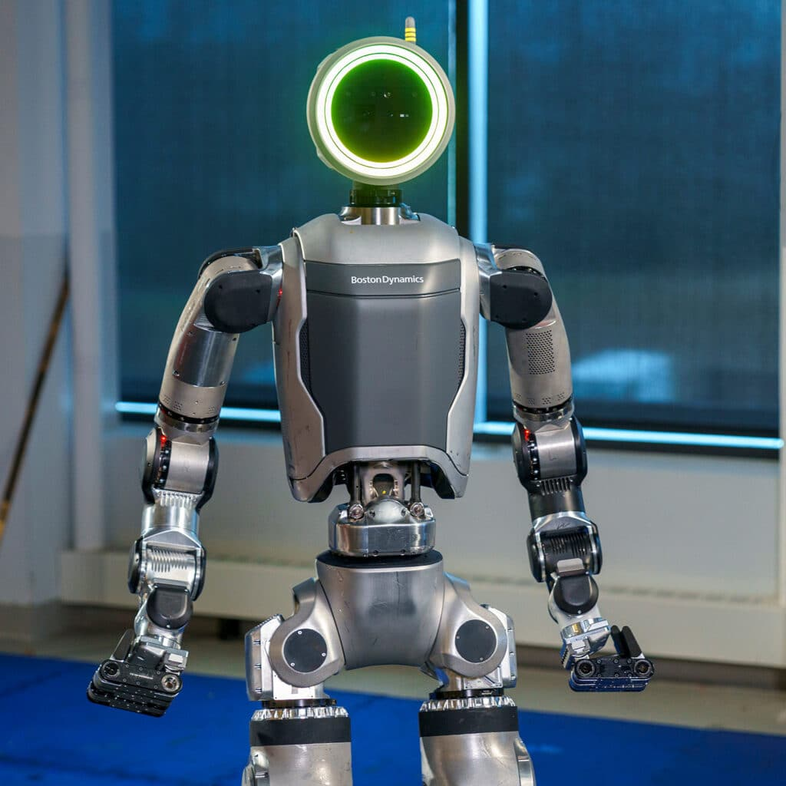
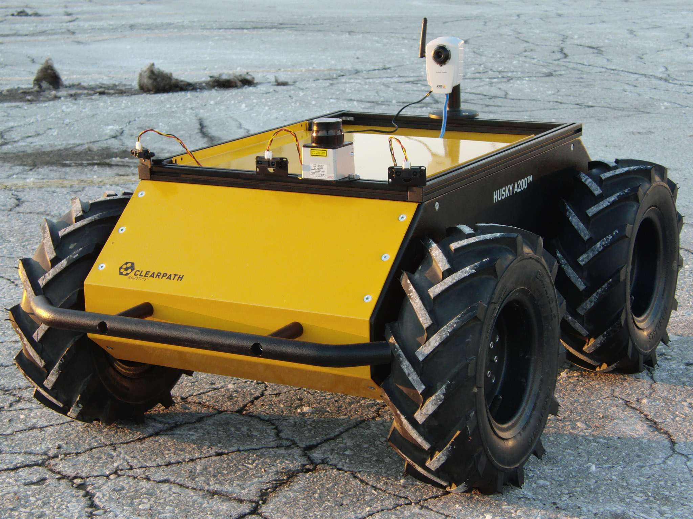
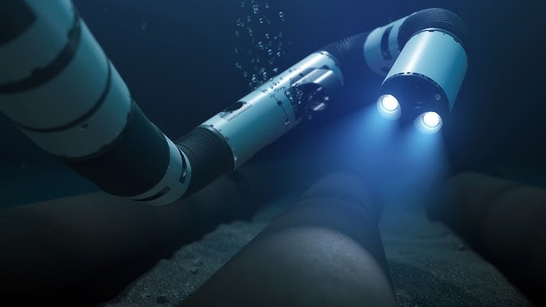
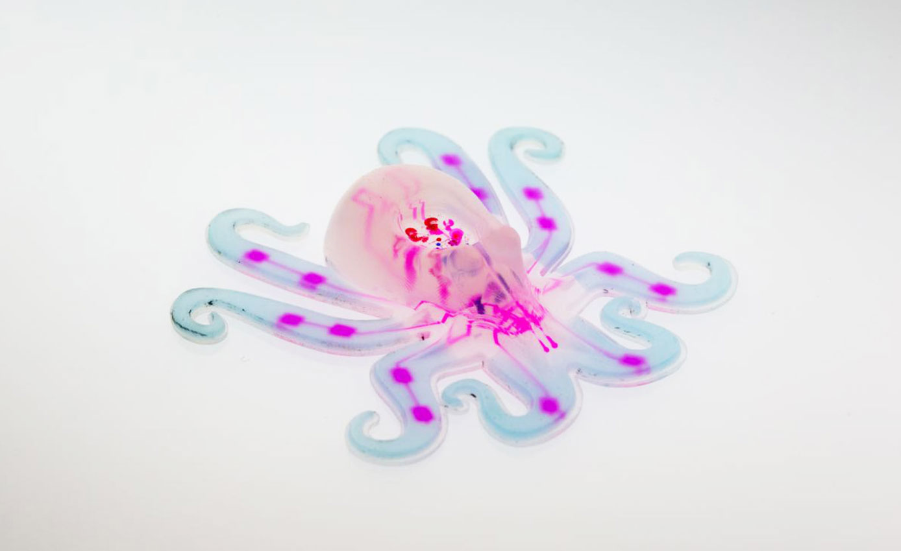
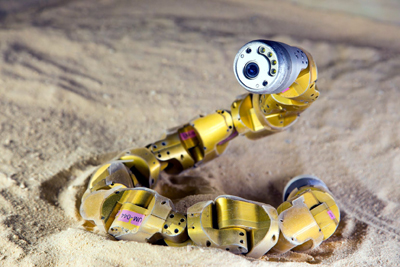

Examples of Robots by Morphology
A collection of real-world robots grouped by their morphology (body shape and locomotion type).
Useful for: research, classes, design inspiration, and comparison of robotic architectures.
1) Humanoid Robots (Bipedal)

- Boston Dynamics — Atlas
- Morphology: Humanoid / bipedal
- Key idea: Human-like body with arms and legs
- Typical applications: Advanced research and industrial manipulation
Why use a humanoid morphology?
Humanoid robots are useful when the environment is designed for humans (stairs, doors, tools).
2) Quadruped Robots (Four-legged)
- Boston Dynamics — Spot
- Morphology: Quadruped
- Key idea: Stability and mobility on uneven terrain
- Typical applications: Industrial inspection, surveillance, mapping

- ANYbotics — ANYmal
- Morphology: Quadruped
- Key idea: Autonomous locomotion in harsh environments
- Typical applications: Industrial inspection with sensors
3) Wheeled Ground Robots (UGVs / AMRs)

- Clearpath Robotics — Husky UGV
- Morphology: Wheeled ground robot
- Key idea: Modular research platform
- Typical applications: Outdoor robotics research, autonomy testing

- iRobot — Roomba
- Morphology: Wheeled domestic robot
- Key idea: Coverage-based navigation with docking
- Typical applications: Home cleaning
General rule
Wheeled robots are energy-efficient and easy to control but depend on flat surfaces.
4) Aerial Robots (Drones / Multirotors)

- DJI — Matrice Series
- Morphology: Multirotor aerial robot
- Key idea: Full 3D mobility
- Typical applications: Inspection, mapping, photogrammetry
5) Underwater Robots (AUV / ROV)

- Eelume — Snake-like Underwater Robot
- Morphology: Articulated, snake-like, modular
- Key idea: Navigation in confined underwater spaces
- Typical applications: Subsea inspection and maintenance
Design challenge
Underwater robots must resist pressure, corrosion, and strong currents.
6) Soft Robots (Soft Robotics)

- Harvard — Octobot
- Morphology: Fully soft-bodied robot
- Key idea: Compliant materials instead of rigid structures
- Typical applications: Research in safe interaction and bio-inspired robotics
Soft robotics advantage
Soft robots are ideal for safe human–robot interaction.
7) Snake Robots (Hyper-redundant Robots)

- Carnegie Mellon University — Snakebot
- Morphology: Multi-jointed, snake-like robot
- Key idea: High number of degrees of freedom
- Typical applications: Search and rescue, confined-space inspection
8) Industrial Robotic Arms (Serial Manipulators)

- Universal Robots — UR5
- Morphology: 6-DOF serial manipulator (cobot)
- Key idea: Precision and repeatability
- Typical applications: Assembly, machine tending, inspection
9) Parallel Robots (Delta Morphology)

- ABB — IRB 360 FlexPicker
- Morphology: Delta / parallel robot
- Key idea: Extremely fast motion
- Typical applications: High-speed pick-and-place
10) Swarm Robots

- Harvard — Kilobots
- Morphology: Robot swarm
- Key idea: Collective behavior and self-organization
- Typical applications: Swarm robotics and distributed systems research
Key concept
Swarm robotics focuses on emergent behavior rather than individual robot complexity.
Summary
Robot morphology strongly influences: - Mobility - Stability - Control complexity - Energy efficiency - Application domain
Choosing the correct morphology is a design decision, not just an aesthetic one.